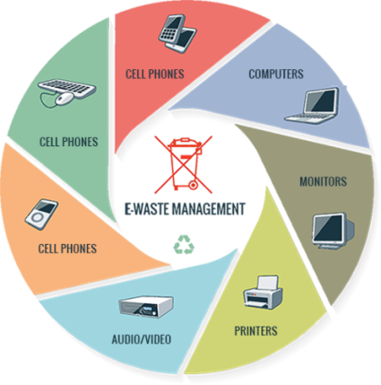

E-Waste's Hidden Harm: Revealing the Numbers
Let’s uncover the environmental footprint left by these e-wastes through some data
- Energy Consumption: Recycling e-waste requires substantial energy; recycling one million laptops can power over 3,500 homes for a year (U.S. EPA)
- Toxic Chemical Release: E-waste releases toxic substances like lead, cadmium, and mercury into the environment, posing serious health and environmental risks.
- Data Security Risks: Inadequate disposal can lead to data breaches; secure e-waste disposal is crucial to protect sensitive information, as highlighted by NIST.
- Electronic Scrap Exportation: Illegally exporting e-waste to developing nations worsens pollution and health hazards, according to research by the Basel Action Network
- Environmental Pollution: Improper e-waste disposal contaminates soil and water; for instance, soil lead levels in some areas can be 200-300 times higher than safe standards
- Resource Depletion: Massive e-waste generation results in a loss of valuable resources, such as gold, silver, and palladium, which could otherwise be recycled
